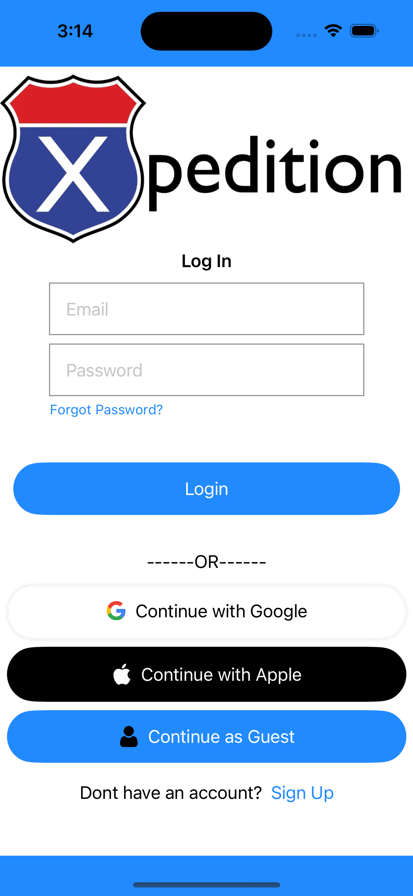

Hi! I'm Alex Lanser!
I am currently a Computer Engineering major senior attending MSOE.
I have multiple summers of internship experience with skills in C, C++, Java, ARM Assembly, VHDL, Python, HTML, CSS, JavaScript, PHP, and SQL.
I am passionate about programming as there are so many different projects that can be done. I've had trouble deciding what I specifically wanted to do in the field, but I have skills for many careers like Front-End Development, Back-End Development, Embedded System Development, fields in Cybersecurity, and more.

Projects
Electronic Lock
Embedded Systems at MSOE project on the MSOE STM32 micoprocessor development board.
Ask the user to guess a 4-digit password. If the user guesses correctly, then a 'success' tune will play and the LEDs will do an 'unlock' pattern. If the user guesses incorrectly, then an 'incorrect' tune will play and the LEDs will flash.
Developed ARM Assembly and C code to bring together the touchpad, LCD screen, LEDs, and speaker. Debugged successfully by going through registers to see what values are entering and exiting.
Jurassic Park

Project's Github
Design of Operating Systems at MSOE C project.
Simulate a park where 60 visitors will visit over a period of 60 seconds, but only 20 visitors can be in the park at a given time. Each visitor must obtain a ticket, go through the museum, board a tour car, go on the tour, enter the gift shop and then leave the park. Drivers must sell tickets to the visitors and drive the cars when they are full.
Developed entirely in C. Uses threads and thread tasks to simulate each of the visitors, drivers, and cars. Uses mutex semaphores to protect critical sections of code, such as acquiring a driver to buy a ticket or to drive a car. Uses semaphores to communicate events between tasks, such as to awaken a driver or signal a mode change. Used resource semaphores to control access to the park, number of tickets available, and the number of people allowed in the gift shop and museum.
3D Image Displayer
Project's Github
Computer Graphics at MSOE C++ project.
Display a read STL file in 3D. Be able to perform transforms on the image including rotating, scaling and transcribing.
Developed entiraly in C++ and uses previous classes that were made throughout the whole quarter. Calculate what a matrix should be depending on what the user wants to do (scale, rotate, change color).
LED Scrolling Text at DDC
At my second year internship with Digital Design Corporation.
Prove that scrolling text is possible on their new RGB LED display that consisted of 8x8 LED matrices connected to form an 8x2 rectangular display. This display will be used in the future Digital Design Corporation devices.
Developed using python and a raspberry pi. Used installed libraries through a raspberry pi terminal and drove the display with the raspberry pi. Successfully debugged to ensure that the written tests worked correctly and proved that the scrolling text was possible to an extent. Later went on my own to figure out how to pull real time weather data using APIs and then display the data on the display.
Tab Manager Chrome Extension
Extension's Webpage Project's Github
Personal project during the summer of 2023
Create a chrome extension to organize tabs into different groups. Groups are organized by title and color. Also allow the user to move tabs from group to group, close a tab, go to a certain tab, and remove tabs from groups.
Developed using HTML, CSS, and JavaScript.
Discord Music Bot
Personal project with a friend during the summer of 2023
Implement a music bot into a Discord server that can be used to play individual songs or playlists form Youtube. Allows for users to play music, pause, resume, skip, and shuffle the music queue all within Discord text and voice channels.
Developed using Python, Youtube API, and Discord API.
Senior Design Project
Senior Design Project at MSOE
Create an iOS app that allows for a user to create a road trip and will map out a route for the user and automatically map out gas station stops depending on the user's car data. Uses Google Firebase and SwiftUI to allow users to login, sign-up, and store trip and car data. Uses Jira to keep track of ticket information for the team's Scrum development.
Developed using XCode, SwiftUI, Google Firebase, and Jira
About Me
Going into MSOE, I was orignally an Electrical Engineering major as I had previously taken hardware classes in highschool and I had built my own PC. The summer before attending, I changed my major to Computer Engineering to get more software exposure and open up more opportunities for me in the future. I have since been focusing on software more than hardware, even to the point where I almost switched to Software Engineering.
The reason why I applied to MSOE was because it was closer to my hometown in Illinois and it is one of the best engineering schools in the country. They are very hands on with weekly labs which is very important for me since I am a poor test taker. After visiting the campus for the first time, I knew I wanted to go because of the environment in and out of the class. Starting in 2020 at MSOE, I have been on the honors list multiple times and have obtained a GPA of 3.10.
I have multiple summers of internship experience with the same company where I learned how to work as an engineer in the field, with one summer focusing on Electrical Engineering and another summer focusing of Software Development.
If you are interested to contact me contact me via LinkedIn.
Skills & Experience
Skills (alphabetical)
- C
- C++
- HTML
- CSS
- JavaScript
- SQL
- PHP
- Java
- Python
- Embedded Systems
- ARM Assembly
- VHDL
- Intel Quartus
- Intel FPGAs
- Digital Logic
- Wireshark
- Ubuntu
- Linux
- IntelliJ
- Scrum
- Jira
- Oracle VM VirtualBox
- Oscilloscopes
- Multimeters
- Google Firebase
- SwiftUI
Experience
Intern at Digital Design Corporation for 2 summers May 2021-Aug. 2021 and May 2022-Aug. 2022
Part-time intern at Columbus McKinnon Corporation during school Oct. 2023-Pres.
Student at MSOE for 3.5 years Sep. 2020-Pres.